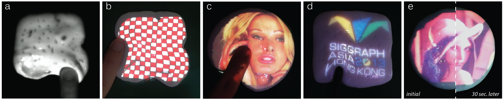

DeforMe: Visualization of Tangential Surface Deformation using Invisible Textures
SIGGRAPH Asia 2013: Emerging Technologies, and Springer-Verlag Virtual Reality 2015
We propose a projection-based mixed reality system that visualizes the tangential deformation of a nonrigid surface by superimposing graphics directly onto the surface by projected imagery. The superimposed graphics is deformed according to the surface deformation. To achieve this goal, we develop a computer vision technique that estimates the tangential deformation by measuring the frame-by-frame movement of an infrared (IR) texture on the surface. IR ink, which can be captured by an IR camera under IR light but is invisible to the human eye, is used to provide surface texture. Consequently, the textures do not degrade the image quality of the augmented graphics. The proposed technique measures surface motion between two successive frames individually. Therefore, it does not suffer from occlusions caused by interactions and allows various interactions (e.g., touching, pushing, pulling, and pinching). The moving least squares (MLS) technique interpolates the measured result to estimate denser surface deformation. The proposed method relies only on the apparent motion measurement; thus, it is not limited to a specific deformation characteristic, but is flexible for multiple deformable materials, such as viscoelastic and elastic materials. Experiments confirm that the proposed method can visualize surface deformation of various materials by projected illumination even when a user's hand occludes the surface from the camera.

With DeforMe, projected graphics are realistically deformed to match the deformed surfaces: (a) infrared-based textures are used to estimate the deformation of the surfaces, (b)(c) and (d) various deformable surfaces can be used with the system, (e) DeforMe can also be used for the case of a self-dilating object.
Related Publication:
1.
Parinya Punpongsanon, Daisuke Iwai, Kosuke Sato.
Projection-based Visualization of Tangential Deformation of Nonrigid Surface by Deformation Estimation Using Infrared Texture.
Virtual Reality, Springer London, Vol. 19(1), PP. 45-56. March 2015.
2.
Parinya Punpongsanon, Daisuke Iwai, and Kosuke Sato.
DeforMe: projection-based visualization of deformable surfaces using invisible textures.
In Proceedings of ACM SIGGRAPH Asia 2013: Emerging Technologies. Article 8, Hongkong, China, November 2013.
3.
Parinya Punpongsanon, Daisuke Iwai, and Kosuke Sato.
Projection-based Visualization of Viscoelastic Surfaces Deformation using Infrared Vision Technique.
In Proceedings of 6th Thailand-Japan International Academic Conference (TJIA), Osaka, Japan, November 2013.
4.
Parinya Punpongsanon, Daisuke Iwai, and Kosuke Sato.
Projection-based Mixed Reality for Deformable Surfaces. Talked in the 6th Korea-Japan Workshop on Mixed Reality (KJMR2013),
Okinawa, Japan, February 2013. (Best Presentation Award)
5.
Parinya Punpongsanon, Daisuke Iwai, and Kosuke Sato.
表面変形のビジュアルトラッキングによる粘弾性曲面上での射影に基づく複合現実感. 第88回パターン計測シンポジウム資料,
SICE, pp.35-40, Yamanashi, Japan, December 2012.